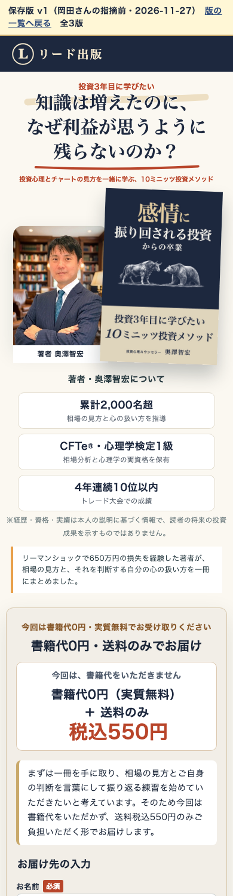

『感情に振り回される投資からの卒業』販売LP 版の一覧と、岡田さんの指摘のチェック
岡田さん（広告の専門家）の動画の指摘の前と後の版を、両方開けるように残しています。今の公開版（いちばん新しい版）：https://tanakayuc.github.io/static-pages/okuzawa-book-lp/
点検リスト（岡田さんの指摘と田中さんの指摘事項を、Claude Code と Gemini の2者で判定）：https://tanakayuc.github.io/static-pages/okuzawa-book-lp/versions/check.html
版の一覧
v1：広告対策前
2026-11-27
書籍代0円・送料のみの申込、悩みから始める構成、伏せ字の段、比較の図、受講生の声、損失額の一文、本の図2-3・図4-7を載せていた版。
保存版を開く：https://tanakayuc.github.io/static-pages/okuzawa-book-lp/versions/v1/index.html

v2：広告対策後
2026-11-28
広告の専門家（岡田さん）の指摘と田中さんの決定（11/27・11/28）を反映した今の版。PR表記・送料込み550円・本の内容紹介だけの構成・教科書的な本の図3枚・広告対策の表紙と書名・大会実績は主催者の注釈つき・特商法は代表取締役 邑﨑恵理。
保存版を開く：https://tanakayuc.github.io/static-pages/okuzawa-book-lp/versions/v2/index.html

画像は、それぞれの版をスマホの幅（390px）で開いた最初の画面です。保存版のページの一番上には、どの版かを示す黄色い帯を付けています（公開版には付けていません）。
v1 から v2 で変えた所
- ページ一番上に四角い枠の「PR」を入れた（00:00）
- 見出しを「投資の勉強をしたい方へ／投資心理とチャートの基礎を学ぶ一冊」にし、NGワード（卒業・振り回される）を含む旧題を冒頭にもページのどこにも出さないようにした（00:00・09:37・田中さん 11/28）
- 書籍代0円・送料のみ → 送料込み 税込550円（03:13・田中さん）
- 悩み・実演から始める構成をやめ、「どんな本か → 本書の構成 → 本書の一部 → 主な内容 → 著者 → 特長 → 申込」の内容紹介だけにした（06:25・08:32）
- 含み益・含み損・利益・勝つ・不安・冷静に・まだ知らない、などの言葉を全部外した（00:00・04:18・05:21・07:29）
- 比較の図と矢印、伏せ字（ぼかし）の段を外し、ぼかしの指定もCSSから消した（05:21・07:29）
- 「損失管理」を「資産管理」にした（07:29）
- 受講生の声と、リーマンショックの損失額の一文を外した（08:32・02:10・田中さん）
- 累計指導人数に※1と「自社調べ」の注釈を付けた（01:06）
- 大会実績は「海外のFX会社FXDDが主催するFXトレード大会」と※2の注釈で示した（02:10・田中さん 11/28）
- 本の図2-3（「乗り遅れが怖い」）・図4-7（「損失条件」「利益」）を外し、図4-2・図4-4・図4-6の教科書的な図3枚にした（08:32・田中さん 11/28）
- 「撤退の目安」「一時的な下げを待つ買い」「候補」「見送る」「売買判断」「10ミニッツ」などの売買・手軽さの含みを外し、教科書のような説明にした（田中さん 11/28・Gemini）
- JAPAN MENSA・大学名・社名による権威付けと、スクールの巻末案内への誘いを外した（Gemini）
- 中央揃えのまま折り返す本文を左揃えにした（03:13）
- フッターに特商法・プライバシーポリシー・利用規約・会社情報を置いた（09:37）
- 特商法の運営統括責任者を「代表取締役 邑﨑恵理」にし、設立・FAXを足した。免責から「利益」を外した（田中さん 11/28）
- 表紙をページ内すべて広告対策案（投資3年目に学びたい 10ミニッツ投資メソッド）にし、書名を『10ミニッツ投資メソッド』にそろえ、「書名・表紙は変更となる場合があります」と注釈を入れた（11:46・田中さん 11/28）
- 冒頭の著者欄にも大会実績（海外FXトレード大会 4年連続入賞・FXDD主催・10位以内※2）を出した（田中さん 11/28）
- 長い段落を文の切れ目で分け、行間と段落の間を広げた（文字の壁にしない。田中さん 11/28）
- 本の図は押すと原寸で開けるようにした（スマホで図の中の文字が小さいため。Geminiのトータルチェック）
- 「〜できる」「〜学べる」の形を言い切りに直した（変化や効果の約束に見えないように。Geminiのチェック）
岡田さんの動画の指摘のまとめ
Geminiが書き起こしの全文から時刻順にまとめ、Claude Codeが書き起こしと照らし合わせました。
- 00:00 ページ最上部のリード出版の後に四角枠で「PR」と明記し、広告であることを直球で伝えること。
- 00:00 「利益」という言葉は、本を読めば利益が残ると思わせてしまうためNG。投資の勉強であることを全面的に伝えること。
- 01:06 初心者向けとし、お金の残し方や生み出し方にフォーカスしてはいけない。
- 01:06 「累計2000名超え」には、自社調べ等の注釈を入れること。
- 01:06 CFTeと心理学検定1級が資格であるか確認し、資格であれば記載してよい。
- 02:10 「4年連続10位以内」が何のトレード大会なのか、注釈等で書くこと。
- 02:10 「650万円の損失」など具体的な金額を出すのはAI判定で弾かれる恐れがあるため避けること。
- 03:13 「送料のみ」（書籍代0円）という表現が審査に通るか懸念があること。
- 03:13 テキストが左揃えになっていない箇所があること。
- 04:18 「含み益・含み損」などお金の話は一切しないこと。お勉強コンテンツの建前にすること。
- 04:18 不安を煽る表現や煽り文は使わないこと。
- 05:21 「冷静に」という言葉は、冷静にやれば勝てると思わせるため厳しいこと。
- 05:21 矢印などを使ったビフォーアフターの比較表現は避けること。
- 06:25 「この本はこういう本です」という見せ方をし続けること。
- 06:25 感情を揺さぶる、不安に感じさせる表現は避けること。
- 07:29 「損失管理」ではなく「資産管理」などの言い方にすること。
- 07:29 「まだ知らない」など、隠された裏技や必勝法を匂わせる表現は避けること。
- 07:29 モザイク画像は勝てると思わせるためNGであること。
- 08:32 本の実物がある感じの画像は良いこと。
- 08:32 受講生のエピソードには1つずつ注釈を入れるか、審査を通すなら無くすこと。
- 09:37 フッターを充実させ、利用規約や会社情報を入れること。
- 09:37 「感情に振り回される投資からの卒業」というタイトルは変化を示しているためNGであること。
- 11:46 タイトルを「10ミニッツ投資メソッド」等に変えるか、「タイトルや表紙は変わる可能性があります」と注釈を入れること。
チェックの結果（67 項目）
合格 66・不合格 0・田中さん判断 1
- R9：「FX」という言葉そのものが金融商品の広告と見られないか
チェックリスト① 岡田さんの指摘（27 項目）
Geminiが動画で言ったことだけを1指摘1項目にしました。最後の2項目（C1・C2）は、Geminiの一覧に無かった所をClaude Codeが書き起こしと画面から足したものです。
| 番号 | 根拠（時刻・発言） | 確かめること | 結果 | LPの該当箇所 |
|---|---|---|---|---|
| O1 | 00:00「一番上のとこですね。ま、今リード出版と書いてありますがこっち側でもまあどこでもいいんで、ま、ここのリード出版の後でもいいですしあのPRと書いてください。まあ四角の枠で囲ってPRと書く」 | ページ最上部に四角枠でPRと表記されているか。 | 合格 | 見た目の指定「ページ一番上の header の中に「PR」を .pr-badge（枠線 1.5px・角丸3px・ロゴ「リード出版」の右隣）で表示」 |
| O2 | 00:00「知識は増えたのになぜ利益が思うように残らないのかえ、というこのは利益ということまをもう使うっていうことはそのこのま、要はま、本ですよね。これを見れば利益が残るという風にも思われてしまうのでま、基本的にこれもNGです。」 | 「利益」という言葉を使っていないか。 | 合格 | LP全体で「利益」という言葉は使用されていない。 |
| O3 | 00:00「投資の勉強ですとま、いうところを全面的にもう伝えないといけなくって」 | 投資の勉強であることを全面的に伝えているか。 | 合格 | index.html「投資の勉強をしたい方へ 投資心理とチャートの基礎を学ぶ一冊 相場の見方・投資心理・資産管理の基本を学ぶ入門書」 |
| O4 | 01:06「お金の残し方とかお金の生み出し方とかそういうところにフォーカスしてはいけない」 | お金の残し方や生み出し方にフォーカスしていないか。 | 合格 | index.html「相場の見方と投資心理、日々の判断を記録する手順をまとめた書籍です。」 |
| O5 | 01:06「累計2000名超えというのはえ、ここに注釈入れないとだめですね。え、例えばどこ調べなのか」 | 累計指導人数にどこ調べかの注釈が入っているか。 | 合格 | index.html「※1 累計指導人数は、どさんこ投資スクールの自社調べによるものです。」 |
| O6 | 01:06「CFTというのは資格なんですかね。この心理学検定1級というのが心理学の資格なと思うんですけど、まあこれが資格であればオッケーです。」 | CFTeと心理学検定1級が資格として記載されているか。 | 合格 | index.html「テクニカルアナリスト資格（CFTe®） 心理学検定1級も保有」 |
| O7 | 02:10「4年連続12年、これが何のトレード大会なのかっていうところも書いた方がいいですね。で、まあ注釈で書くなりという感じです。」 | 大会実績に何の大会か注釈が入っているか。 | 合格 | index.html「※2 海外のFX会社FXDDが主催し、「FXワールドカップ」「FXトレードチャレンジ」などの名称で開催されてきたFXのトレード大会での順位です。」 |
| O8 | 02:10「リーマンショックで650万円の損失を経験した著者が…やっぱちょっと金額出すってのはちょっとまあAI判定がね、怖いところですね。…この辺言わなくてもいいかもですね。」 | 損失額などの具体的な金額を出していないか。 | 合格 | LP全体で「650万円の損失」などの記載はない。 |
| O9 | 03:13「このまあ送料のみというところがうーん、どう出るかっていう感じはちょっとします。…書籍代0円のやり口がうーん、通るのかなっていうところは」 | 「送料のみ」「書籍代0円」という表現をしていないか。 | 合格 | index.html「書籍の価格（送料込み・税込） 550円」 |
| O10 | 03:13「ここが左揃えになってない感じが。」 | テキストが左揃えになっているか。 | 合格 | 見た目の指定「本文の段落の揃え方：assets/okuzawa.css で text-align:left を指定」 |
| O11 | 04:18「含み益含み損っていうところもうん、なんかあんまり言わない方がいいような気がしちゃいますね。なんかもうお金の話一切しないっていうところのうん、LPじゃないと結構通りにくい」 | 「含み益」「含み損」などのお金の話をしていないか。 | 合格 | LP全体で「含み益」「含み損」などの記載はない。 |
| O12 | 04:18「あくまでお勉強コンテンツですっていうところにの建前にしないとやっぱり厳しい」 | お勉強コンテンツとしての見せ方になっているか。 | 合格 | index.html「本書は投資の学習を目的とした一般的な情報をまとめた書籍であり」 |
| O13 | 04:18「不安を煽るような表現って基本的にNGになりやすいので…煽り文は基本的にちょっと使わない方がいいかも」 | 不安を煽る表現や煽り文を使っていないか。 | 合格 | index.html「値動きに触れたときに起きやすい三つの行動パターンを取り上げ」など客観的な表現。 |
| O14 | 05:21「冷静にっていうのがえ、ま、冷静にやればじゃあ勝てるっていうことみたいな話に捉えられることもあるのでそこはちょっと厳しい」 | 「冷静に」という言葉を使っていないか。 | 合格 | LP全体で「冷静に」という言葉は使用されていない。 |
| O15 | 05:21「ビフォーアフターでこんな変化がありますっていう風に結局捉えられてしまうので、この矢印とかもそうですけど…あんまりそのビフォーアフターで比較にしない方がいい」 | 矢印などを使ったビフォーアフターの比較表現がないか。 | 合格 | LP全体でビフォーアフターの比較表現はない。 |
| O16 | 06:25「この本はこういう本ですっていう見せ方をもうとにかくし続ける感じになりますね。」 | 本の内容を伝えるだけの見せ方になっているか。 | 合格 | index.html「本書に収録している解説項目と付録の中から、主な9つのテーマをご紹介します。」 |
| O17 | 06:25「感情を揺さぶるというか見てる人がま、不安に感じてしまうっていうところがま、ちょっとでもあるとうん、投資は厳しい」 | 感情を揺さぶったり不安にさせたりする表現がないか。 | 合格 | index.html「気持ちが動いた場面と言葉を分けて書く記入ワークと、あらかじめ決めた基準へ戻る手順を説明します。」 |
| O18 | 07:29「損失管理そうですね。うん、なんだろうな資産管理とかなんかそうなんかそういう言い方の方がいいかもしれないですね。」 | 「損失管理」ではなく「資産管理」という言葉を使っているか。 | 合格 | index.html「第5章 資産管理の基本と記録の方法」 |
| O19 | 07:29「まだ知らないっとかいうとなんか隠された裏技があるみたいな風にニュアンスとして捉えられるんで…必勝法という風に感じてしまうので」 | 「まだ知らない」など裏技や必勝法を匂わせる表現がないか。 | 合格 | LP全体で裏技や必勝法を匂わせる表現はない。 |
| O20 | 07:29「モザイクとかもかなりやばそうですよね。うーん。これ使えば勝てますよって感じさせてしまうんで」 | モザイク画像を使っていないか。 | 合格 | 見た目の指定「ぼかし（blur）の指定：なし」 |
| O21 | 08:32「こういうのなんかいいっすよね。もうなんか実物がちゃんとある感が」 | 本の実物がある感のある画像が使われているか。 | 合格 | index.html「［画像の代わりの文：書籍の表紙。投資3年目に学びたい 10ミニッツ投資メソッド。投資心理とチャート、図で学ぶ相場の見方。投資心理カウンセラー 奥澤智宏］」 |
| O22 | 08:32「受講生のエピソードは注釈入れないとダメですね。これで1個1個全部に…究極に審査通すっていう点で言うとこの受講生の声はなくした方がいい」 | 受講生の声（エピソード）を削除しているか、または全てに注釈を入れているか。 | 合格 | LP全体で受講生の声（エピソード）は掲載されていない。 |
| O23 | 09:37「フッターに利用規約って入れないとダメなんですよね。ええとええとこの下フッターもね結構充実させないといけなかった気がしますね。会社情報とかま利用規約」 | フッターに利用規約や会社情報へのリンクがあるか。 | 合格 | index.html「特定商取引法に基づく表記 プライバシーポリシー 利用規約 会社情報」 |
| O24 | 09:37「感情に振り回される投資からの卒業っていうことは結局まあ変化を、うーん示してるというかこの本を読めばこうなりますって言ってしまってるのでここは言わない方がいい」 | 「感情に振り回される投資からの卒業」という言葉や、変化を示す表現を使っていないか。 | 合格 | LP全体で「感情に振り回される投資からの卒業」という言葉は使用されていない。 |
| O25 | 11:46「例えば10ミニッツ投資メソッドというタイトルにしてもいいかも…タイトルや表紙は変わる可能性がありますみたいな注釈を入れておけばいいかな」 | タイトルを「10ミニッツ投資メソッド」等にし、「タイトルや表紙は変わる可能性があります」と注釈を入れているか。 | 合格 | index.html「※本ページに掲載している書名・表紙は、変更となる場合があります。」 |
| C1 | 10:43「タイトルだけであなたのお手元にみたいな感じですか」 | 最後の申込欄の見出しを「書名を、あなたのお手元へ」程度にしているか | 合格 | index.html「『感情に振り回される投資からの卒業』を、あなたのお手元へ」 直し方・補足：Claude Codeが追加（Geminiの一覧に独立した項目が無かったため） |
| C2 | 10:20 画面に映っていた運営講師の言葉（「大儲けすることを諦めたとき、資産が増えるようになった」） | 運営講師の言葉（大儲け・資産が増える）が載っていないか | 合格 | index.html 全体に「大儲け」「資産が増える」なし 直し方・補足：Claude Codeが追加（話した言葉ではなく、動画の画面で指していた所） |
チェックリスト② 指摘から類推した厳しめのチェック（40 項目）
岡田さんの指摘と同じ理由で審査に引っかかりそうな所を、Geminiが厳しめに挙げたものです。不合格になった項目はClaude Codeが確かめて直し、もう一度Geminiに判定させています。
| 番号 | 根拠（時刻・発言） | 確かめること | 結果 | LPの該当箇所 |
|---|---|---|---|---|
| R1 | 04:18「お金の話一切しない」からの類推 | お金の増減を連想させる言い回し（全ページ。法定ページの免責も含む） | 合格 | LP全体で「稼ぐ」「儲かる」「増える」「減る」などの表現はない。 |
| R2 | 05:21「冷静にやれば勝てるという話に捉えられる」からの類推 | 売買の判断や「待って買う」「見送る」のような手法の含み | 合格 | index.html「注文の前に確認しておく項目と取引数量の考え方」など、学習としての表現にとどまっている。 |
| R3 | 07:29「損失管理より資産管理」からの類推 | 損を避ける含み（撤退・損切り・リスク回避） | 合格 | index.html「資産管理の基本と記録の方法」という表現に統一されている。 |
| R4 | 04:18「不安を煽るような表現って基本的にNG」からの類推 | 不安・焦り・恐れを連想させる言葉 | 合格 | index.html「値動きに触れたときに起きやすい三つの行動パターンを取り上げ」など客観的な表現になっている。 |
| R5 | 09:37「変化を示しているというかこの本を読めばこうなりますって言ってしまってるのでここは言わない方がいい」からの類推 | 変化や効果を約束して見える言い方（〜できる、身につく、卒業 など） | 合格 | index.html「〜を解説します」「〜を紹介します」という表現になっている。 |
| R6 | 07:29「隠された裏技があるみたいな風にニュアンスとして捉えられる」からの類推 | 時間が短くて済むことを売りにして見える言い方（10分 など） | 合格 | index.html「書名の「10ミニッツ」は、朝の10分を目安に日足チャートを確かめ、見たことを一行で記録する考え方を指します（取引のすべてが10分で終わるという意味ではありません）。」 |
| R7 | 01:06「累計2000名超えというのはえ、ここに注釈入れないとだめですね」からの類推 | 実績の数字ごとの注釈と出所 | 合格 | index.html「※1 累計指導人数は、どさんこ投資スクールの自社調べによるものです。」「※3 株式会社ザ・リードのプレスリリース（2025年2月20日・PR TIMES「起業家のための『プロダクトローンチの教科書』1万冊突破！」）によるものです。」 |
| R8 | 02:10「何のトレード大会なのかっていうところも書いた方がいい」からの類推 | 大会実績の注釈の中身（主催者・大会名・出所） | 合格 | index.html「※2 海外のFX会社FXDDが主催し、「FXワールドカップ」「FXトレードチャレンジ」などの名称で開催されてきたFXのトレード大会での順位です。大会名と順位は本人の資料によるものです。」 |
| R9 | 04:18「投資案件なんで本当に厳密に」からの類推 | 「FX」という言葉そのものが金融商品の広告と見られないか | 田中さん判断 | index.html「※2 海外のFX会社FXDDが主催し、「FXワールドカップ」「FXトレードチャレンジ」などの名称で開催されてきたFXのトレード大会での順位です。」 直し方・補足：依頼主の決定により、FXDD主催のFXトレード大会であることを注釈で明記する方針としたため、このままとする。 |
| R10 | 01:06「CFTというのは資格なんですかね」からの類推 | 他社名・団体名・大学名・商標（FXDD・パナソニック・東北大学・MENSA・CFTe など）の出し方 | 合格 | index.html「テクニカルアナリスト資格（CFTe®）」 |
| R11 | 01:06「心理学検定1級というのが心理学の資格なと思うんですけど、まあこれが資格であればオッケーです」からの類推 | 資格の書き方 | 合格 | index.html「テクニカルアナリスト資格（CFTe®） 心理学検定1級も保有」 |
| R12 | 07:29「モザイクとかもかなりやばそう」からの類推 | 伏せ字やぼかし | 合格 | 見た目の指定「ぼかし（blur）の指定：なし」 |
| R13 | 05:21「矢印とかもそうですけど…比較にしない方がいい」からの類推 | 図の中の言葉（図1枚ごと） | 合格 | 図の中の文字：assets/reason-band.svg「帯は価格の上限・下限ではなく、売買の合図でもありません。」 |
| R14 | 06:25「この本はこういう本ですっていう見せ方をもうとにかくし続ける」からの類推 | 画像の代わりの文 | 合格 | index.html「［画像の代わりの文：投資の勉強をしたい方へ 投資心理とチャートの基礎を学ぶ一冊 相場の見方・投資心理・資産管理の基本を学ぶ入門書］」 |
| R15 | 04:18「煽り文は基本的にちょっと使わない方がいい」からの類推 | 見出し画像の中の言葉 | 合格 | 図の中の文字：assets/headline-graphic.svg「投資の勉強をしたい方へ 投資心理とチャートの 基礎を学ぶ一冊 相場の見方・投資心理・資産管理の基本を学ぶ入門書」 |
| R16 | 06:25「感情を揺さぶるというか見てる人がま、不安に感じてしまう」からの類推 | 本の帯の言葉の引用（投資3年目 など） | 合格 | index.html「「投資3年目に学びたい」という言葉は読者を経験年数で限定するものではありません。」 |
| R17 | 04:18「あくまでお勉強コンテンツですっていうところにの建前にしないと」からの類推 | スクールへの誘導が投資サービスの勧誘に見えないか | 合格 | index.html「相場の見方や資産管理の基本に加え、過去のチャートを使って判断の理由を言葉にする練習や、投資心理との向き合い方をお伝えしています。」 |
| R18 | 04:18「投資案件なんで本当に厳密に」からの類推 | 免責の書き方 | 合格 | index.html「特定の金融商品や個別銘柄の売買を推奨するものではありません。実際の投資判断は、ご自身の状況や取引先の条件をご確認のうえ、ご自身の責任で行ってください。」 |
| R19 | 09:37「会社情報とかま利用規約」からの類推 | 特商法の項目（販売事業者・運営統括責任者・連絡先・価格・送料・届け方・返品） | 合格 | tokusho.html「販売事業者名 株式会社ザ・リード」「運営統括責任者 代表取締役 邑﨑恵理」「電話番号 03-6869-2426」「販売価格 書籍『10ミニッツ投資メソッド』…550円（税込・送料込み）」「商品のお届け方法・時期 ご入力いただいたご住所へお届けします。配送には3営業日から4営業日を目安としております。」「返品・キャンセル お客様のご都合による返品・キャンセルは承っておりません。」 |
| R20 | 09:37「フッターに利用規約って入れないとダメ」からの類推 | プライバシーポリシーと利用規約の中身 | 合格 | privacy.htmlおよびterms.htmlに内容が記載されている。 |
| R21 | 09:37「会社情報とか」からの類推 | 会社情報 | 合格 | company.html「会社名 株式会社ザ・リード」「設立 2013年7月」「所在地 〒107-0062 東京都港区南青山2丁目2番15号 ウィン青山1302」 |
| R22 | 00:00「一番上のとこですね。…四角の枠で囲ってPRと書く」からの類推 | PR表記の場所と見え方 | 合格 | 見た目の指定「ページ一番上の header の中に「PR」を .pr-badge（枠線 1.5px・角丸3px・ロゴ「リード出版」の右隣）で表示」 |
| R23 | 03:13「ここが左揃えになってない感じが」からの類推 | 文字の揃え方 | 合格 | 見た目の指定「本文の段落の揃え方：assets/okuzawa.css で text-align:left を指定」 |
| R24 | 03:13「書籍代0円のやり口がうーん、通るのかな」からの類推 | 申込ボタンの文言 | 合格 | index.html「送料込み 税込550円で本を申し込む →」 |
| R25 | 03:13「送料のみというところがうーん、どう出るかっていう感じはちょっとします」からの類推 | 価格の見せ方（割引や無料に見えないか） | 合格 | index.html「書籍の価格（送料込み・税込） 550円」 |
| R26 | 11:46「タイトルや表紙は変わる可能性がありますみたいな注釈を入れておけばいい」からの類推 | 題名の扱い | 合格 | index.html「※本ページに掲載している書名・表紙は、変更となる場合があります。」 |
| R27 | 01:06「本当初心者向けでかつ、あ、なんかお金の残し方とか…フォーカスしてはいけない」からの類推 | 読者の書き方（初心者でも、など） | 合格 | index.html「読者を経験年数で限るものではなく、基礎から順に整理したい方に向けた構成になっています。」 |
| R28 | 07:29「隠された裏技があるみたいな風にニュアンスとして捉えられる」からの類推 | FAQの答え方 | 合格 | index.html「学習や振り返り、資産管理の計算、注文の準備までを10分で終える意味ではありません。」 |
| R29 | 06:25「この本はこういう本ですっていう見せ方をもうとにかくし続ける」からの類推 | 著者の経歴の書き方（研究職など） | 合格 | index.html「大学院を修了後、電機メーカーの研究職を経て、2014年に独立し投資スクールを開校しました。」 |
| R30 | 09:37「フッターもね結構充実させないといけなかった」からの類推（取引の透明性） | 配送時期の明記 | 合格 | index.html「配送には3営業日から4営業日を目安としております。」 |
| R31 | 09:37「フッターもね結構充実させないといけなかった」からの類推（取引の透明性） | 決済方法の明記 | 合格 | index.html「お支払い方法はクレジットカード払いとなります。」 |
| R32 | 09:37「フッターもね結構充実させないといけなかった」からの類推（取引の透明性） | 返品・キャンセルの明記 | 合格 | tokusho.html「お客様のご都合による返品・キャンセルは承っておりません。破損・落丁・乱丁などの不良品が届いた場合は…良品と交換いたします。」 |
| R33 | 09:37「会社情報とか」からの類推 | 連絡先の明記 | 合格 | tokusho.html「電話番号 03-6869-2426」「メールアドレス info@the-lead1.com」 |
| R34 | 09:37「利用規約って入れないとダメ」からの類推 | 著作権の明記 | 合格 | terms.html「第6条（著作権） 本商品および本ウェブサイトに掲載された文章・図・画像の著作権は、著者または当社その他の正当な権利者に帰属します。」 |
| R35 | 09:37「利用規約って入れないとダメ」からの類推 | 準拠法・管轄の明記 | 合格 | terms.html「第11条（準拠法・管轄） 本規約は日本法に従って解釈されます。本規約または本商品に関して紛争が生じた場合は、東京地方裁判所を第一審の専属的合意管轄裁判所とします。」 |
| R36 | 09:37「利用規約って入れないとダメ」からの類推 | 個人情報の取り扱い目的の明記 | 合格 | privacy.html「第4条（個人情報を収集・利用する目的）」 |
| R37 | 09:37「利用規約って入れないとダメ」からの類推 | クッキー等の取り扱いの明記 | 合格 | privacy.html「第8条（クッキー及びIPアドレス等に関して）」 |
| R38 | 04:18「あくまでお勉強コンテンツですっていうところにの建前にしないと」からの類推 | 投資助言業に該当しないことの明示 | 合格 | index.html「特定の金融商品や個別銘柄の売買を推奨するものではありません。」 |
| R39 | 05:21「冷静にやればじゃあ勝てるっていうことみたいな話に捉えられる」からの類推 | 表現の断定の回避 | 合格 | LP全体で「必ず」「絶対に」などの断定的な表現はない。 |
| R40 | 04:18「お金の話一切しない」からの類推 | 損失補填の禁止の遵守 | 合格 | LP全体で損失補填に関する表現はない。 |
機械チェック（ページの文字を直接確かめた結果）
合計：36 項目のうち、合格 36・田中さん判断 0・不合格 0
| # | 動画の時刻 | 指摘・チェックポイント | 画面で指していた所 | 結果 | 確かめた内容 |
|---|---|---|---|---|---|
| 1 | 00:00 | ページ一番上に四角い枠のPR | 一番上のヘッダー（ロゴの横） | 合格 | ヘッダー内に枠つき「PR」あり |
| 2 | 00:00 | 見出しに「利益」を使わない | 冒頭の大見出し | 合格 | 見つからない |
| 3 | 01:06 | 「投資の勉強」の本だと前面に出す | 冒頭の大見出し | 合格 | 見出し画像の一行目と、読み上げ用の見出し（h1）に「投資の勉強をしたい方へ」 |
| 4 | 01:06 | お金の残し方・生み出し方に焦点を当てない | ページ全体 | 合格 | ページの文章にも本の図の中にも無い |
| 5 | 01:06 | 累計2,000名に注釈※1と出所 | 著者の帯・著者紹介・講師欄 | 合格 | 2,000名の後ろに必ず※1、フッターに「自社調べ」 |
| 6 | 02:10 | CFTe・心理学検定1級が資格と分かる | 著者の帯 | 合格 | 「テクニカルアナリスト資格（CFTe®）」「心理学検定1級」 |
| 7 | 02:10→田中さん | 岡田さん：何のトレード大会か注釈などで書いた方がいい。田中さん（11/28）：「海外FX会社、FXDD主催のFXトレード大会で」と書く。大会の記載すべてに※2、注釈に主催者・大会名・出所 | 著者紹介・講師欄 | 合格 | 大会の記載すべて（3か所）に※2。注釈：海外のFX会社FXDDが主催し、「FXワールドカップ」「FXトレードチャレンジ」などの名称で開催されてきたFXのトレード大会での順位です。大会名と順位は本人の資料によるものです。 |
| 8 | 02:10→田中さん | 岡田さん：損失額は金額でAIに弾かれる可能性がある（「いいかもしんない」とも言った）。田中さんの判断：リーマンショックで650万円の損失の一文を消す | 著者の帯の下・著者紹介（08:50で選択） | 合格 | 見つからない |
| 9 | 03:13→田中さん | 岡田さん：「書籍代0円・送料のみ」は投資案件で通るか分からない。田中さんの判断：送料込み550円に | 申込欄・特長・終盤・特商法・自動返信 | 合格 | LP・特商法・自動返信メールすべて「送料込み」、0円表記なし |
| 10 | 03:40 | 中央揃えのまま折り返す本文をやめる（左揃え） | 悩みセクションの最後の段落（04:00で選択） | 合格 | 悩みの最後の段落は削除。375・768・1280pxで開き、2行以上に折り返す段落に中央揃えが0件（画面で実測） |
| 11 | 04:18 | 含み益・含み損などお金に触れる言葉を消す | 日常の3場面 | 合格 | ページの文章にも本の図の中にも無い |
| 12 | 04:18 | 不安を煽る表現を使わない | 悩みのセクション | 合格 | ページの文章にも本の図の中にも無い |
| 13 | 05:21 | 「冷静に売買できる？」をやめる | 比較のセクションの見出し | 合格 | 見つからない |
| 14 | 05:21 | 「これまで→本書の視点」の比較と矢印の図をやめる | 比較のセクション | 合格 | 比較の図・比較カードなし |
| 15 | 06:25 | 「この本はこういう本です」の内容紹介にする | ページ全体の構成 | 合格 | 「どんな本か」「本書の構成」「本書で扱う主な内容」で構成 |
| 16 | 07:29 | 悩み・「たとえば値上がりを見て買いたくなった朝」をやめ、本の内容から始める | 悩み・実演（07:20）→「6つの視点」（07:30） | 合格 | ページの文章にも本の図の中にも無い |
| 17 | 07:29 | 「損失管理」を「資産管理」などに | 6つの視点の05 | 合格 | ページの文章にも本の図の中にも無い |
| 18 | 07:29 | 「まだ知らない方法」と伏せ字（モザイク）をやめる | バレット第1段（08:00） | 合格 | 伏せ字の段ごと削除 |
| 19 | 08:32→田中さん | 岡田さん：本の図を見て「こういうのなんかいいっすよね。もうなんか実物がちゃんとある感が」。田中さん（11/28）：危ない図（図2-3・図4-7）は差し替え、実物の図解はもう少し載せる | 特長の図 | 合格 | 本の実物の図を3枚（図4-2・図4-4・図4-6）。図2-3・図4-7は外した |
| 20 | 08:32→田中さんの方針 | 岡田さん：受講生の声は1件ずつ注釈。審査を最優先なら無くした方がいい。田中さんの方針（入れない方がいいと言われた所は外す）を当てて載せない | 受講生のエピソード（09:10） | 合格 | 見つからない |
| 21 | 09:37 | フッターに利用規約・会社情報 | フッター（09:50） | 合格 | フッターに4つのリンク、利用規約・会社情報のページあり |
| 22 | 09:37 | 変化を示す見出し（〜からの卒業へ）をやめる | 終盤の見出し | 合格 | 見つからない |
| 23 | 10:20 | 運営講師の言葉（大儲け・資産が増える）をやめる | 運営講師の欄（10:20〜10:30に表示） | 合格 | 見つからない |
| 24 | 10:43 | 最後は「書名を、あなたのお手元へ」程度 | 最後の申込欄の見出し | 合格 | 「『書名』を、あなたのお手元へ」 |
| 25 | 10:43→田中さん | 岡田さん：書名が変化を示していて怖い。落ちたら書名と表紙を変え「タイトルや表紙は変わる可能性があります」と注釈。田中さん（11/28）：冒頭の旧題はNGワード。広告対策の表紙と書名にそろえる | 見出し・書名・表紙・注釈 | 合格 | 旧題・「卒業」「振り回され」なし。表紙はページ内すべて広告対策案、注釈あり |
| 26 | 全体 | NG表現の語（お金・利益・損失・金額・変化・冷静・不安・隠された方法・お客様の声の語）がページに無い。Claude Code は skills/投資系広告コピー の検査道具で、ほかのAIはページの文字を読んで確かめる | ページ全体 | 合格 | index.html：要修正 0 件・必須要素の欠け 0 件 |
| 27 | 田中さん | 特商法はザ・リードの表記。運営統括責任者は「代表取締役 邑﨑恵理」（11/28 田中さん：片岡守さんのAIコンサルタント養成講座の特商法にそろえる） | 特商法のページ | 合格 | 販売事業者・運営統括責任者（代表取締役 邑﨑恵理）・設立・所在地・電話・FAX・メール・HP。免責に「利益」なし |
| 28 | 田中さん | プライバシーポリシーはWEB集客本と同じ本文。責任者は「代表取締役 邑﨑恵理」 | プライバシーポリシーのページ | 合格 | UTAGEの原文と本文が一致（責任者の肩書きだけ足した。空白を除いて比較） |
| 29 | 11/28 田中さん | 教科書のように書く。利益を上げる・損を避ける・売買の手法・手軽さ・権威付けの含みを残さない（Geminiの厳しいチェックで出た所も含む） | ページ全体 | 合格 | 見つからない |
| 30 | 07:29 | ぼかし（モザイク）の指定がページのCSSにも残っていない | 見た目の指定 | 合格 | style.css・okuzawa.css に blur の指定なし |
| 31 | 11/28 田中さん | 文字の壁にしない（本文の段落は100字以内に分け、行間を広げる。章のカード・よくある質問の答え・フッターは除く） | 本文の段落 | 合格 | 本文の段落はすべて100字以内・行間1.95 |
| 32 | 11/28 田中さん | 大会実績は一次データどおり「4年連続入賞（10位以内）」。「優勝」とは書かない（本の原稿・第48期セミナー資料に優勝の記載なし） | 著者欄・著者紹介・講師欄 | 合格 | 「4年連続入賞」「10位以内」あり、「優勝」なし |
| 33 | 11/28 田中さん | 冒頭の著者欄にも大会実績を出す | 冒頭の著者欄 | 合格 | 冒頭の著者欄に「海外FXトレード大会 4年連続入賞」 |
| 34 | 11/28 田中さん | 配送の書き方は「配送には3営業日から4営業日を目安としております」（フォームのまわり・特商法・利用規約・自動返信メールでそろえる） | 申込欄・特商法・利用規約・自動返信 | 合格 | フォームの中・特商法・利用規約・自動返信メールに「3営業日から4営業日」、「3営業日以内」なし |
| 35 | 11/28 田中さん | 発行元（リード出版＝株式会社ザ・リード）の信用の材料をフッターと会社情報に出す（設立・所在地・出版物・『プロダクトローンチの教科書』累計1万冊※3、注釈にプレスリリース） | フッター・会社情報 | 合格 | フッターに発行元の紹介（2013年設立・『プロダクトローンチの教科書』累計1万冊※3）、※3にプレスリリース（2025-02-20 PR TIMES）、会社情報に事業内容と出版物 |
| 36 | Gemini | Geminiのチェックリスト（岡田さんの指摘＋類推）で不合格0件。今のページより新しい判定であること | 全ページ | 合格 | 20261128-094950：岡田さんの指摘 25・類推 40 項目。不合格 0・田中さん判断 1（うち田中さんの決定に当たるもの 0：FXの大会実績・書名の10ミニッツ・本の図の中の打ち消し） |
Geminiの判定の記録：20261128-094950（モデル gemini-3.1-pro-preview・2026-11-28T09:51:32）。書いたのはClaude Code、確かめたのはGemini、最後の確認は田中さんです。